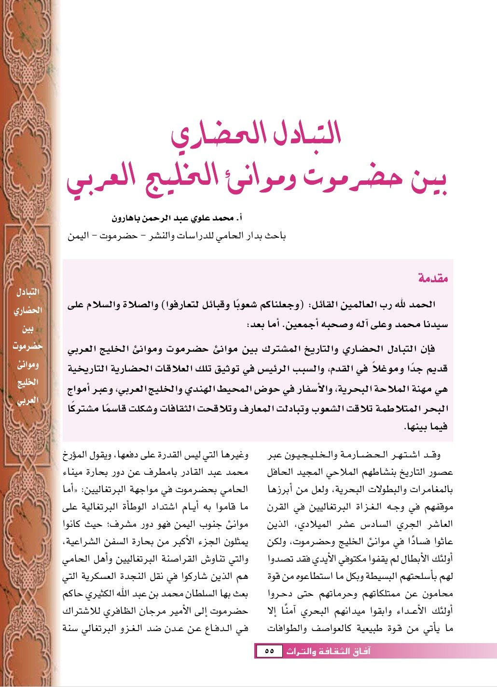
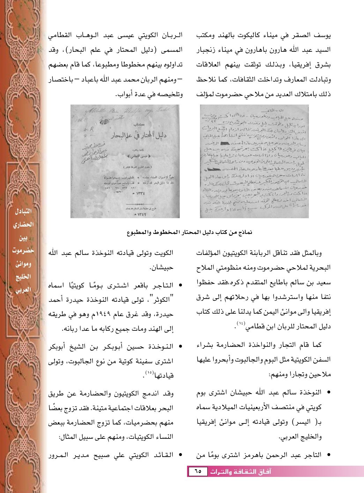

آفاق الثقافة والتراث · مقال بقلم محمد علوي عبدالرحمن باهارون، «التبادل الحضاري بين حضرموت وموانئ الخليج العربي»، مجلة آفاق الثقافة والتراث، ص ٥٥ إلى ٦٨
حضرموت وموانئ الخليج: سفن القطامي ودليل المحتار في اليمن
ما هي
دراسة في الصلات بين حضرموت وموانئ الخليج العربي. تذكر الصفحة ٦٣ أن السفن الكويتية كانت تنتقل بين موانئ حضرموت جالبة تمور البصرة لغرض بيعها «بقيادة نواخذتها من أمثال النوخذة معيوف البدر وعبد الوهاب وعبد العزيز القطامي وغيرهم». وتذكر الصفحة ٦٥ امتلاك العديد من ملاحي حضرموت لمؤلف «الربان الكويتي عيسى عبد الوهاب القطامي المسمى دليل المحتار في علم البحار»، وأنهم تداولوه بينهم مخطوطا ومطبوعا، وقام بعضهم ومنهم الربان محمد عبد الله باعباد باختصاره وتلخيصه في عدة أبواب، وأنهم حفظوا نتفا من منظومات باطايع كما يدلنا على ذلك «دليل المحتار للربان ابن قطامي». وتحيل الهوامش والمراجع في الصفحتين ٦٧ و٦٨ إلى الكتاب، مطبعة دار السلام ببغداد، الطبعة الأولى.
أهميتها
يبين استعمال ملاحي حضرموت لدليل المحتار، وتجارة نواخذة القطامي في موانئ حضرموت.
صور الصفحات





أسماء أخرى
المصادر
محمد علوي عبدالرحمن باهارون، «التبادل الحضاري بين حضرموت وموانئ الخليج العربي»، آفاق الثقافة والتراث، ص ٥٥ و٦٣ و٦٥ و٦٧ و٦٨
كيف كُتب هذا النص: لا يظهر رقم العدد وسنته في الصفحات المرسلة. ولا يحدد المقال أي عبدالوهاب القطامي كان يتاجر إلى حضرموت. والصفحات ٥٦ إلى ٦٢ و٦٤ و٦٦ لا تذكر العائلة فلم تدرج.
افتح في الموقع التفاعلي